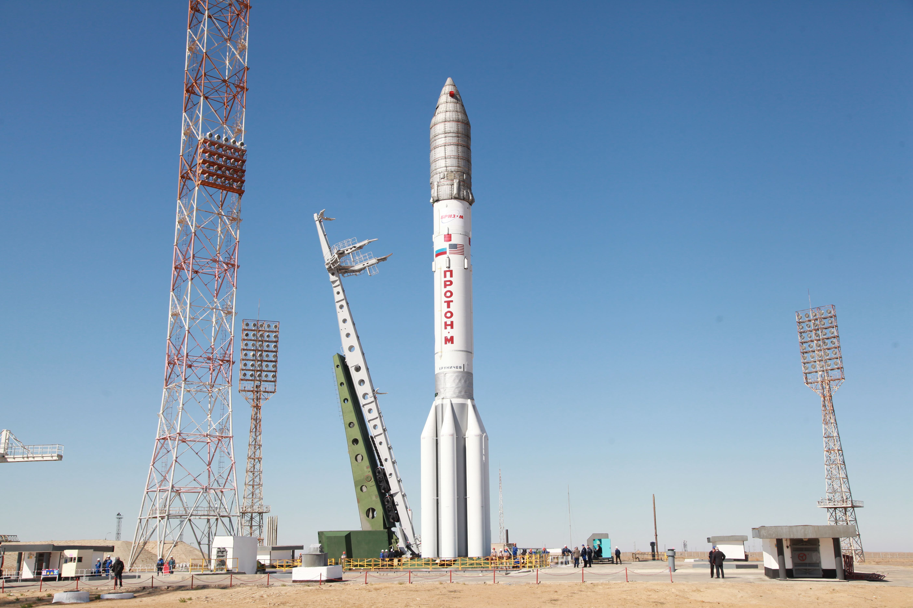

Тяжёлый «Протон»
История «Протона» началась в разгар холодной войны. В 1961 году в ОКБ-52 (конструкторском бюро Владимира Челомея) начали разработку сверхмощной ракеты, способной нести ядерный заряд колоссальной мощности. Проект получил название УР-500. Однако уже к моменту первого пуска в 1965 году военные потеряли к ней интерес, и ракету решено было использовать для вывода в космос тяжёлых научных аппаратов «Протон». Это имя в итоге и закрепилось за носителем.
Для своего времени «Протон» стал настоящим гигантом. Он оказался настолько удачным, что его трёхступенчатая версия «Протон-К» на десятилетия стала главной рабочей лошадкой советской, а затем и российской космонавтики для решения самых сложных задач. Именно «Протон» выводил на орбиту орбитальные станции «Салют» и модули станции «Мир». С его помощью на Луну отправились луноходы, а к Венере и Марсу — автоматические станции. В 1998 году «Протон» вывел первый модуль МКС «Заря», а следом за ним и служебный модуль «Звезда».

В 2001 году на смену «Протону-К» пришла его глубокая модернизация — «Протон-М» с цифровой системой управления и новым разгонным блоком «Бриз-М», что позволило заметно увеличить массу выводимых спутников. Ракета стала основой коммерческих запусков России. Вот как описывал её роль в отрасли один из разработчиков:
«Протон» — это уникальное явление. Созданный в 60-е, он оставался востребованным полвека. Это показатель инженерного гения его создателей.
Однако у «Протона» была и теневая сторона. Его топливо — гептил и амил — чрезвычайно токсично. В случае аварии это создавало серьёзные экологические проблемы в районах падения ступеней. Кроме того, «Протон» мог стартовать только с космодрома Байконур в Казахстане. К началу XXI века стала очевидной необходимость создания новой, экологически чистой ракеты, которая летала бы с территории России.
Универсальная «Ангара»
Идея создания новой ракеты родилась ещё в 1992 году. Перед конструкторами стояла амбициозная задача: разработать семейство ракет от лёгкого до тяжёлого класса на основе универсальных ракетных модулей. В 1995 году проект «Ангара» получил официальный старт.
В 1990-е годы из-за недостатка финансирования работы шли медленно, но в 2000-е они возобновились. 9 июля 2014 года с космодрома Плесецк успешно стартовала лёгкая «Ангара-1.2ПП», а в декабре того же года — тяжёлая «Ангара-А5». Для России наступила новая эра.
Главное отличие «Ангары» от «Протона» — модульность и экологичность. В основе ракеты лежит универсальный ракетный модуль (УРМ) с двигателем РД-191, работающим на экологически чистом топливе — керосине и жидком кислороде. Из таких «кирпичиков» можно собирать ракету под любую задачу: один модуль даёт лёгкий носитель, пять — тяжёлый. Производство «Ангары» было решено перенести из Москвы в Омск, на ПО «Полёт». Один из ведущих инженеров предприятия так описывал этот этап:

«Ангара» — это практически новая с нуля ракета, а не модернизация "Протона" или ещё чего-то. Абсолютно новая разработка. Принципы заложены ещё королёвские, но фактически полностью заимствованных узлов практически нет.
В апреле 2024 года тяжёлая «Ангара-А5» впервые стартовала с нового гражданского космодрома Восточный, а в 2025 году её лёгкая версия продолжила успешно выводить спутники с Плесецка. Всего к концу 2025 года состоялось уже шесть успешных запусков «Ангары-1.2».
Сегодня «Ангара» — это не просто замена «Протону». Это гарантия независимого доступа России в космос. Её грузоподъёмность позволяет выводить до 24 тонн на низкую орбиту, и в перспективе именно «Ангаре» предстоит стать основным носителем для строительства Российской орбитальной станции и пилотируемых полётов.